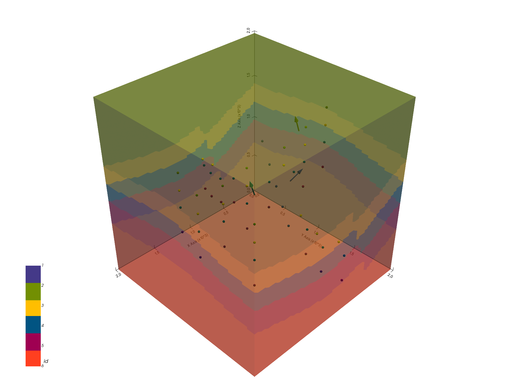

Note
Click here to download the full example code
Export a geological model from GemPy to use in MOOSE¶
import gempy as gp
Creating a geological model¶
The procedure of generating a geological model is presented in detail in Chapter 1-1 of the GemPy tutorials, so it will only be briefly presented here
Initiate a model
geo_model = gp.create_model('tutorial_moose_exp')
data_path = 'https://raw.githubusercontent.com/cgre-aachen/gempy_data/master/'
Import data from CSV-files with setting the resolution and model extent
gp.init_data(geo_model, [0, 2000., 0, 2000., 0, 2000.], [50, 50, 80],
path_o=data_path + "/data/input_data/tut_chapter1/simple_fault_model_orientations.csv",
path_i=data_path + "/data/input_data/tut_chapter1/simple_fault_model_points.csv",
default_values=True)
Out:
Active grids: ['regular']
tutorial_moose_exp 2021-04-18 11:39
present the units and series
combine units in series and make two series, as the fault needs its own
gp.map_stack_to_surfaces(geo_model,
{"Fault_Series": 'Main_Fault',
"Strat_Series": ('Sandstone_2', 'Siltstone', 'Shale', 'Sandstone_1', 'basement')},
remove_unused_series=True)
# set the fault series to be fault object
geo_model.set_is_fault(['Fault_Series'], change_color=False)
check whether series were assigned correctly
Model generation¶
After loading in the data, we set it up for interpolation and compute the model.
set up interpolator
gp.set_interpolator(geo_model,
compile_theano=True,
theano_optimizer='fast_compile',
verbose=[])
Out:
Setting kriging parameters to their default values.
Compiling theano function...
Level of Optimization: fast_compile
Device: cpu
Precision: float64
Number of faults: 1
Compilation Done!
Kriging values:
values
range 3464.1
$C_o$ 285714.29
drift equations [3, 3]
<gempy.core.interpolator.InterpolatorModel object at 0x7fcb8b722e50>
compute the model
gp.compute_model(geo_model, compute_mesh=False);
Out:
Lithology ids
[6. 6. 6. ... 2. 2. 2.]
have a look at the data and computed model
Out:
<gempy.plot.vista.GemPyToVista object at 0x7fcb89256100>
Exporting the Model to MOOSE¶
The voxel-model above already is the same as a model discretized in a
hexahedral grid, so my immediately be used as input in a simulation
tool, e.g. MOOSE. For this, we need to
access to the unit IDs assigned to each voxel in GemPy. The array
containing these IDs is called lith_block.
ids = geo_model.solutions.lith_block
print(ids)
Out:
[6. 6. 6. ... 2. 2. 2.]
This array has the shape of (x,) and would be immediately useful, if
GemPy and the chosen simulation code would populate a grid in the same
way. Of course, however, that is not the case. This is why we have to
restructure the lith_block array, so it can be read correctly by
MOOSE.
model resolution
These two parameters are important to, a) restructure lith_block,
and b) write the input file for MOOSE correctly. For a), we need to
reshape lith_block again to its three dimensions and re-flatten it
in a MOOSE-conform way.
reshape to 3D array
nx, ny, nz is apparent from the cell above. But
what about xmin, …, zmax?[MeshGenerators]
[./gmg]
type = GeneratedMeshGenerator
dim = 3
nx = 50
ny = 50
nz = 80
xmin = 0.0
xmax = 2000.0
yim = 0.0
ymax = 2000.0
zmin = 0.0
zmax = 2000.0
block_id = '1 2 3 4 5 6'
block_name = 'Main_Fault Sandstone_2 Siltstone Shale Sandstone_1 basement'
[../]
[./subdomains]
type = ElementSubdomainIDGenerator
input = gmg
subdomain_ids = ' ' # here you paste the transformed lith_block vector
[../]
[]
[Mesh]
type = MeshGeneratorMesh
[]
So these parameters are required inputs in the [MeshGenerators]
object in the MOOSE input file. GemPy has a method to directly
create such an input file, stored in gempy.utils.export.py.
The following cell shows how to call the method:
# sphinx_gallery_thumbnail_path = '_static/GemPy_model_combined.png'
import gempy.utils.export as export
export.export_moose_input(geo_model, path='')
Out:
Successfully exported geological model as moose input to ./
This method automatically stores a file
geo_model_units_moose_input.i at the specified path. Either this
input file could be extended with parameters to directly run a
simulation, or it is used just for creating a mesh. In the latter case,
the next step would be, to run the compiled MOOSE executable witch the
optional flag --mesh-only.
E.g. with using the PorousFlow module:
$path_to_moose/moose/modules/porous_flow/porous_flow-opt -i pct_voxel_mesh.i --mesh-only
How to compile MOOSE is described in their documentation.
The now generated mesh with the name
geo_model_units_moose_input_in.e can be used as input for another
MOOSE input file, which contains the main simulation parameters. To call
the file with the grid, the following part has to be added in the MOOSE
simulation input file:
[Mesh]
file = geo_model_units_moose_input_in.e
[]
The final output of the simulation may also be such an .e, which
can, for instance, be opened with
paraview. A simulated temperature field
(purely conductive) of the created model would look like this:

Total running time of the script: ( 0 minutes 8.698 seconds)